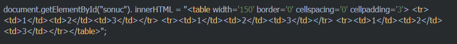
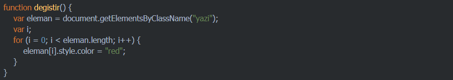
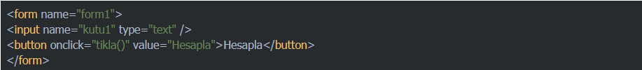

JavaScript ile web sayfamızdaki etiketlerin ve form elemanlarının içeriklerine-değerlerine ulaşmak, bunlarla işlem yapmak ve değiştirmek isteyebiliriz.
Özellikle form elemanlarına ziyaretçiler tarafından girilen bilgilere ulaşmaya sıkça ihtiyaç duyarız.
JavaScript'te çeşitli metotlar kullanarak html etiketlerinin içerik ve özelliklerine ulaşabilir ve istersek bu özellikleri değiştirebiliriz.
Bu metotlardan bazıları şunlardır.
Web sayfasındaki html etiketlerine ulaşmak için en çok kullanılan metotlardan biridir. Ulaşılmak istenen html nesnesinin id'si belirtilerek, ilgili elemana ulaşmamızı sağlar.
Örneğin k1 isimli metin kutusunun içindeki değere şu şekilde ulaşabiliriz:
Benzer şekilde istenen elemanın stil özellikleri, innerHtml özelliği gibi birçok özelliğine erişilerek değişiklik yapılabilir.
Body kısmında yer alan bir html etiketinin içeriğini değiştirmemizi sağlar.
Örnek: Sayfamızda id'si "sonuc" olan bir p etiketi bulunsun. Bu etiket içerisine birşeyler yazdırmak istersek şu satırı kullanabiliriz:
innerHTML özelliği ile sayfanın istenen yerine Html kodları da ekleyebilriz.
JavaScript ile sayfaya html kodları eklerken, tırnak işaretlerini karıştırırsak sorun yaşarız. Bu nedenle çift tırnak içerisinde tekrar tırnak işareti kullanmamız gerekirse, içteki tırnak işaretlerini tek tırnak olarak yazmalıyız.
Hatırlatma: JavaScript büyük küçük harfe duyarlı bir dildir. Ayrıca html'de olduğu gibi komut satırlarını yazarken her istediğimiz yerde alt satıra geçemeyiz. JavaScript komut satırları nokta (.) ve eşittir (=) gibi karakterlerden sonra bölünebilmekteyken, komutlar, tırnak içleri ve benzeri ifadeler bölünerek alta geçilmemelidir.
Örnek:

Id özelliği her etiket için farklı olması gereken bir özelliktir. Bu durumda getElementById metodu ile aynı anda birden fazla elemana ulaşmamız mümkün değildir.
Class özelliği ise sayfada bir çok etikete uygulanmış olabilir. Sayfada aynı class'ın uygulandığı tüm elemanlar ile işlem yapmak istersek getElementsByClassName metodunu kullanabiliriz.
Bu metotta parantez içinde aradığımız class adı yazılır, devamında ise köşeli parantez içerisinde o class'a sahip elemanlar içindeki kaçıncı elemana ulaşacağımız belirtilir.
Örneğin;
Yukarıdaki satırda .yazi class'ı uygulanmış ilk elemana ulaşılacaktır. İndex numaraları her zaman 0'dan başlar.
Sayfada aynı class'ın uygulandığı tüm elemanlara ulaşmak ve işlem yapmak istersek bir döngü kullanabiliriz.
Örnek: Aşağıdaki örnekte .yazi class'ı uygulanmış tüm elemanların metin rengi değiştirilmiştir.

ayet id'ye göre değil de name özelliğine göre bir html nesnesine ulaşmak istersek getElementsByName metodunu kullanabiliriz. Kullanımı bir üstte anlatılan getElementsByClassName metoduna benzer. Ulaşılmak istenilen elemanın index numarasının da belirtilmesi gerekir.
Örnek:
Köşeli parantez içinde belirttiğimiz index numarası, o sayfada belirttiğimiz name özelliğine sahip elemanlardan kaçıncı sıradakinin alınacağını belirtmiş olur. İndeks numarası 0'dan başlar.
Bu örnekte name özelliği "kutu" olan ilk html elemanına ulaşılacaktır.
Sayfamızdaki html formu içindeki elemanların değerlerine şu şekilde de ulaşabiliriz.
Örnek:
Aşağıdaki gibi bir html formumuz olsun:

Formun adı form1, ulaşmak istediğimiz metin kutusunun adı ise kutu1 olduğu için;
şeklinde kutunun değerine ulaşabiliriz.
Sayfaya metin ya da Html kodlarını sayfaya yazdırmamızı sağlar.